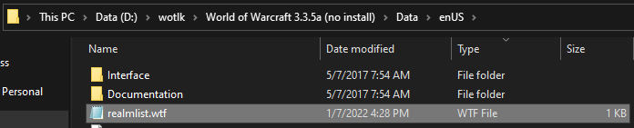

Click here to register a new account with Arena Tournament. A unique username, email, and password is required to register. This username and password will be used to login to the game and this website.
Click the download buttons below to download the client for your system
World of Warcraft 3.3.5a
~18.0 GB
Windows Download Windows direct Download Windows mega.nz Download Windows torrent
MacOS Download MacOS direct
Addons
Once you have downloaded and extracted the 3.3.5a client open its folder with wow.exe.
Open the Data folder, then the enUS, enGB, or enDE folder.
Edit the realmlist.wtf file with a text editor so it reads
set realmlist logon.arena-tournament.net
Launch wow.exe if using windows or World of Warcraft.app on MacOS.
Login using the username and password registered in the first step.